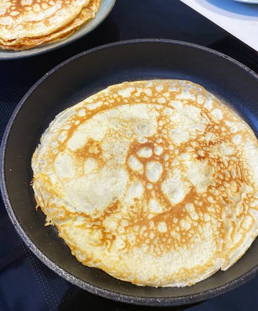

Pannkaka - grundrecept
Hem

Beskrivning
Ett grundrecept på pannkakor.
Ingredienser
4 portioner
- 2 1/2 dl vetemjöl
- 1/2 tsk salt
- 6 dl mjölk
- 3 ägg
- smör (till stekning)
- sykt, bär eller frukt till servering
Gör så här
En sats på 4 portioner blir 8-10 pannkakor beroende på storleken på stekpannan.
- Blanda mjöl och salt i en bunke.
- Vispa i hälften av mjölken och vispa till en slät smet.
- Vispa i resten av mjölken och äggen.
- Låt smeten vila ca 10 minuter.